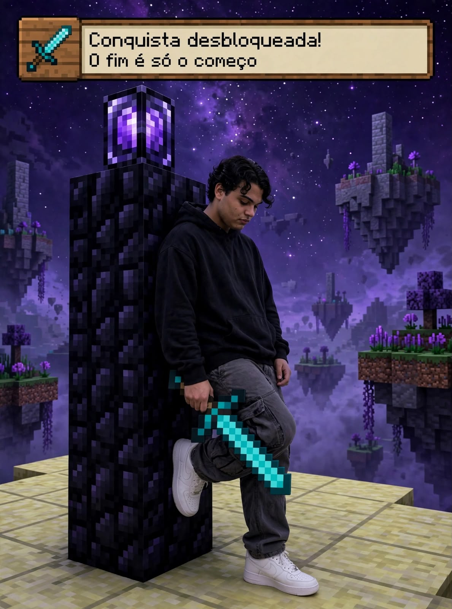
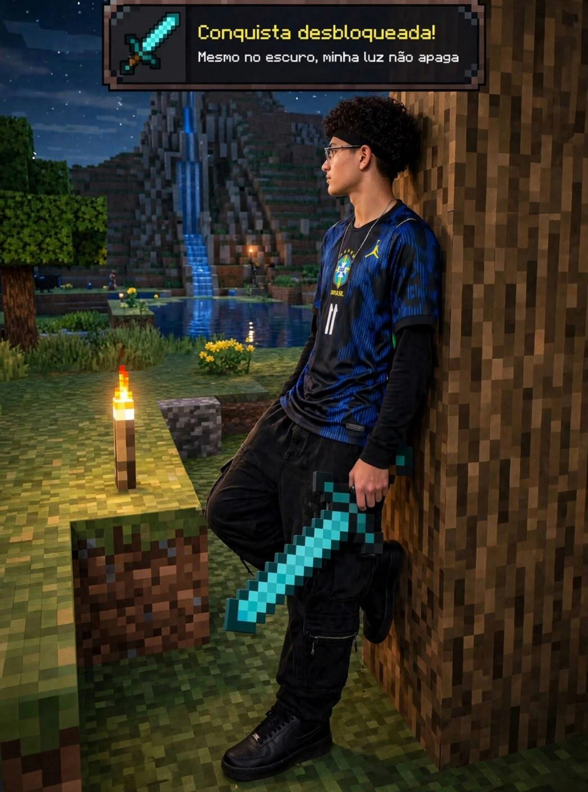
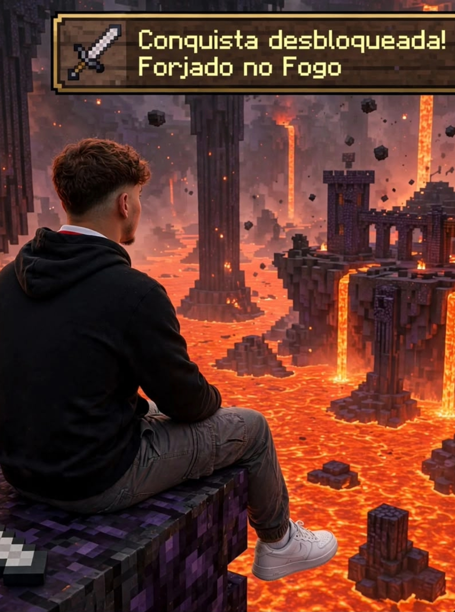

Aqui sera contado um pouco sobre os criadores desses projeto

Em uma era esquecida pelo tempo, quando os céus ainda não possuíam nome e os mares permaneciam intocados, algo começou a despertar nas profundezas do mundo. Ninguém sabia explicar sua origem, tampouco compreender o motivo de sua existência. Apenas se sabia que, desde aquele momento, o equilíbrio que mantinha todas as coisas em seu devido lugar jamais seria o mesmo.
Durante muitos anos, histórias foram contadas sobre criaturas estranhas, lugares impossíveis e acontecimentos que desafiavam tudo aquilo que os povos conheciam. Alguns acreditavam que eram apenas lendas criadas para assustar crianças, enquanto outros juravam ter visto com seus próprios olhos aquilo que não deveria existir.
Com o passar das eras, pequenos acontecimentos começaram a se conectar. Estranhos sinais surgiram em regiões distantes, antigas ruínas foram encontradas e registros aparentemente sem importância passaram a revelar padrões. Aos poucos, tornou-se evidente que havia algo muito maior acontecendo por trás de tudo.
Foi então que aqueles que buscavam respostas começaram a registrar cada descoberta. Criaturas, fenômenos, territórios e acontecimentos passaram a ser catalogados, na esperança de que algum dia fosse possível compreender a verdadeira natureza daquele mundo.
Mas quanto mais respostas eram encontradas, mais perguntas surgiam. E, entre todas elas, uma permanecia acima das demais: o que realmente havia dado início a tudo isso?

Eu sou o Cadu, tenho 17 anos e estou no 2º ano do Ensino Médio Integrado ao Técnico em Logística na ETEC Alberto Santos Dumont. Apesar de ainda estar no ensino médio, já penso bastante no meu futuro e tenho objetivos bem grandes, principalmente na área de tecnologia. Quero aprender desenvolvimento de sistemas, criar meus próprios projetos e, no futuro, estudar fora do Brasil, com universidades como MIT e Harvard sendo algumas das minhas maiores referências. Sei que isso é extremamente competitivo, então já penso em inglês, provas, projetos, experiência e tudo que posso construir desde agora.
Programação entrou recentemente na minha vida, mas rapidamente virou uma das coisas que mais me interessam. Comecei com HTML, CSS e Python e agora estou focando mais em JavaScript. Um dos meus principais projetos é o catálogo de monstros da M.O.M., que começou como um site e foi crescendo até virar praticamente um universo próprio, com personagens, histórias, estatísticas, categorias e sistemas. Já aprendi bastante errando, principalmente com CSS, GitHub, Git e GitHub Pages. Às vezes passo tempo demais tentando descobrir por que uma coisa de 10 linhas não funciona, mas pelo menos continuo tentando até entender.
Também sou bastante competitivo comigo mesmo. Já tive resultados em olimpíadas como OBMEP e OBA, tenho interesse em melhorar meu desempenho acadêmico e gosto de acompanhar minha evolução em várias áreas. Isso também aparece fora dos estudos, como no Valorant, na academia, na natação e até nos cuidados com meu cabelo cacheado. Eu gosto de testar coisas, comparar resultados e descobrir o que funciona melhor para mim. O problema é que às vezes quero melhorar tudo ao mesmo tempo, o que pode acabar me fazendo perder foco.
No geral, acho que uma das coisas que mais me define é que eu penso grande, mesmo ainda estando no começo. Quero trabalhar, conquistar meu próprio dinheiro, aprender programação de verdade, criar projetos relevantes, estudar fora e construir uma vida muito diferente da média. Ainda tenho muito a aprender e, principalmente, preciso transformar minha vontade de evoluir em consistência. Tenho várias ideias, mas o verdadeiro desafio vai ser escolher algumas delas e levar até o fim, porque potencial sem execução é só uma ideia bonita.
No fim, eu ainda estou descobrindo exatamente quem vou ser. Tenho 17 anos, então seria meio ridículo esperar que eu já tivesse tudo resolvido. Mas já comecei a construir alguma coisa: estou estudando, criando, errando, tentando de novo e procurando oportunidades. Talvez daqui a alguns anos eu olhe para tudo isso e ache engraçado o quanto ainda não sabia. Mas provavelmente vou reconhecer que foi justamente nessa fase que comecei a construir a pessoa que queria me tornar.

Em uma era esquecida pelo tempo, quando os céus ainda não possuíam nome e os mares permaneciam intocados, algo começou a despertar nas profundezas do mundo. Ninguém sabia explicar sua origem, tampouco compreender o motivo de sua existência. Apenas se sabia que, desde aquele momento, o equilíbrio que mantinha todas as coisas em seu devido lugar jamais seria o mesmo.
Durante muitos anos, histórias foram contadas sobre criaturas estranhas, lugares impossíveis e acontecimentos que desafiavam tudo aquilo que os povos conheciam. Alguns acreditavam que eram apenas lendas criadas para assustar crianças, enquanto outros juravam ter visto com seus próprios olhos aquilo que não deveria existir.
Com o passar das eras, pequenos acontecimentos começaram a se conectar. Estranhos sinais surgiram em regiões distantes, antigas ruínas foram encontradas e registros aparentemente sem importância passaram a revelar padrões. Aos poucos, tornou-se evidente que havia algo muito maior acontecendo por trás de tudo.
Foi então que aqueles que buscavam respostas começaram a registrar cada descoberta. Criaturas, fenômenos, territórios e acontecimentos passaram a ser catalogados, na esperança de que algum dia fosse possível compreender a verdadeira natureza daquele mundo.
Mas quanto mais respostas eram encontradas, mais perguntas surgiam. E, entre todas elas, uma permanecia acima das demais: o que realmente havia dado início a tudo isso?